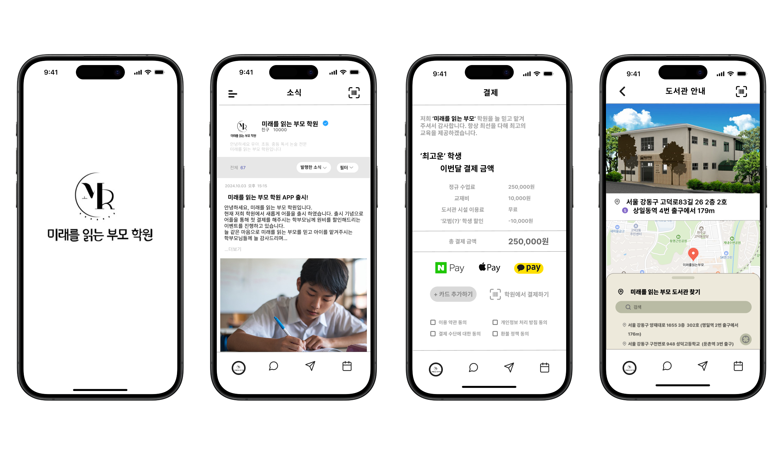
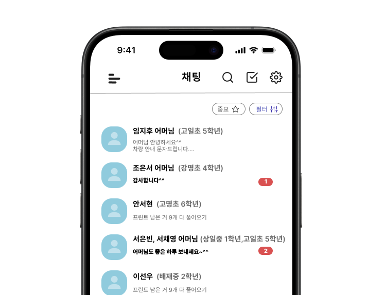
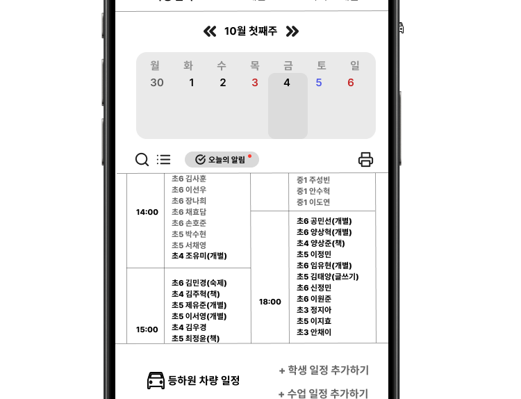
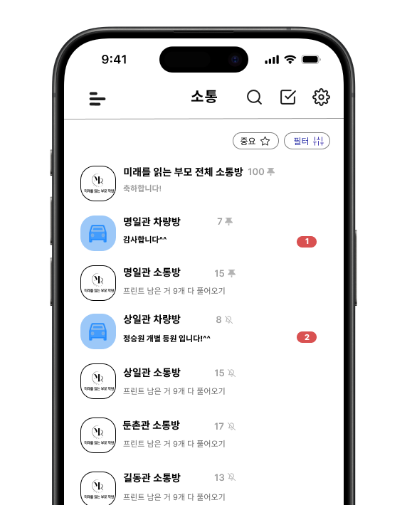
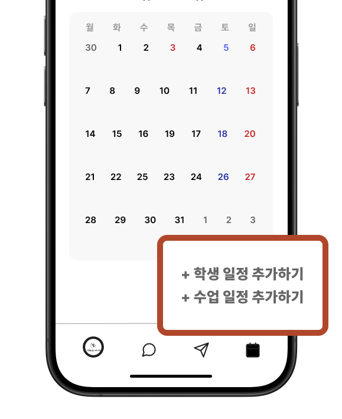

동명이인 오안내
학교·반 정보 부족으로 다른 학생에게 안내가 전달됐습니다.
Service Planning · UI/UX · 2023
인정받고 싶어 시작해, 적성을 발견하다
1,200명 규모 학원의 수기 학생 관리와 소통 오류를 개선하고자 기획한 앱 프로토타입입니다. 출결, 일정, 보강, 학부모 소통으로 흩어져 있던 업무를 하나의 흐름으로 연결하고자 했습니다.

01Start
막내 강사였던 저는, 결과물로 가능성을 증명하고 싶었습니다
당시 저는 학원에서 가장 어린 강사였습니다. 주어진 업무를 수행하는 데 그치지 않고, 학원의 문제를 함께 고민하고 해결할 수 있는 구성원임을 보여주고 싶었습니다.
학생 관리 과정에서 반복되는 정보 누락과 소통 오류를 발견한 뒤, 누구의 요청도 없이 학원 관리 앱을 기획했습니다. 학업과 강사 업무를 병행하며 약 한 달 동안 기능 기획, UI/UX 디자인, 인터랙티브 프로토타입 제작을 혼자 진행했습니다.
02Problem
1,200명 이상의 학생 정보가 종이와 메모에 흩어져 있었습니다
매일 등원 예정 학생 명단을 출력한 뒤, 학생이 도착하면 이름을 펜으로 지우며 출석을 확인했습니다. 결석·보강·시간 변경 요청은 전화를 받은 교사가 명단 옆에 직접 메모했고, 마감 전 이를 다시 정리해 다음 날 명단을 새로 출력했습니다.
하루 평균 5장의 명단이 출력됐고, 7명의 교사가 하루 10건 안팎의 변경 요청을 손으로 옮겨 적었습니다. 명단을 다시 정리하는 데만 매일 30분이 들었습니다.
학교·반 정보 부족으로 다른 학생에게 안내가 전달됐습니다.
전화 메모와 교사의 기억에 따라 요청이 누락됐습니다.
휴가·근무지 이동 시 학생 정보 전달이 끊겼습니다.
중요한 학생 정보가 시스템이 아닌 특정 교사의 기억에 의존하고 있었습니다.
03Solution
현장에서 반복된 문제를 세 가지 기능으로 풀고자 했습니다
전문적인 서비스 기획 방법론을 알고 시작한 프로젝트는 아니었습니다. 대신 실제 업무 중 가장 자주 발생했던 문제를 기준으로 필요한 기능을 정리했습니다.
이름만으로 학생을 구분하던 방식에서 벗어나, 학교·나이·소속 반을 함께 확인할 수 있도록 구성했습니다. 이름이 같더라도 추가 정보를 통해 다른 학생에게 잘못 안내하는 상황을 줄이고자 했습니다.
학생 정보를 나열하는 데 그쳤습니다. 이후에는 교사가 자주 찾는 정보 순으로 위계를 정리할 필요가 있다고 판단했습니다.

기존에 출력해 사용하던 명단의 구조를 유지해, 교사가 별도의 학습 없이 일정을 확인할 수 있도록 구성했습니다. 익숙한 화면에서 학생과 수업 일정을 추가·수정해, 변경 사항의 누락을 줄이고자 했습니다.
초기 제안 단계에서는 사용자의 적응을 우선해 기존 명단의 구조를 유지했습니다. 이후 발전시킨다면 정보 위계와 가독성을 개선할 필요가 있다고 판단했습니다.

학생별 소통방과 공용 일정에서 변경 내용을 함께 확인할 수 있도록 구성했습니다. 담당자가 바뀌어도 이전 대화와 일정을 이어 확인해, 학생 정보가 특정 교사의 기억에만 머물지 않도록 했습니다.
채팅과 일정을 각각 제공해 정보 공유와 업무 확인을 돕고자 했습니다. 이후에는 두 기능을 학생별 기록으로 연결해 탐색 단계를 줄일 필요가 있다고 판단했습니다.


매일 다시 출력하고 다시 옮겨 적던 과정을, 한 번 입력하면 남는 기록으로 바꾸고자 했습니다.
04Proposal
현장의 문제를 해결안으로 구체화해 직접 발표했습니다
혼자 진행한 기능 기획, UI 디자인, 인터랙티브 프로토타입을 학원 대표와 강사들에게 직접 제안했습니다.
현장의 문제와 해결 방향에 공감을 얻어, 실제 도입을 위한 구체적인 검토까지 이어졌습니다.
학원 운영의 불편을 줄일 수 있다는 공감을 얻어, 실제 도입에 필요한 조건과 방향을 구체적으로 검토했습니다.
검토 과정에서 별도의 개발 예산과 운영 여건이 필요하다는 점을 확인했고, 제안은 검토 단계에서 마무리됐습니다.
출시로 이어지지는 않았지만, 현장의 문제를 해결안으로 구체화해 조직의 공감을 얻고 도입 검토까지 이끌어낸 첫 제안 경험이었습니다.
05Reflection
전문적인 방법론 없이 시작한 첫 프로젝트였지만, 서비스 기획과 UI/UX를 더 배우고 싶다고 생각한 출발점이 되었습니다.
인정받고 싶어 시작했지만, 문제를 정리하고 해결안을 화면으로 구체화하는 과정에서 더 큰 흥미를 느꼈습니다. 막내 강사로서 가능성을 보여주려던 시도가, 제가 어떤 일에 몰입하는 사람인지를 알려준 셈입니다.
이 프로젝트의 문제 정의는 전적으로 제 경험에서 나왔습니다. 매일 겪는 일이었기에 확신이 있었지만, 그 확신을 다른 교사의 업무 흐름으로 확인하는 과정은 없었습니다. 지금이라면 기획보다 먼저 현장을 듣는 일부터 시작했을 것입니다.
결과물의 완성도보다, 현장의 문제를 스스로 발견하고 해결안으로 구체화해 제안한 경험에 더 큰 의미가 있었습니다.